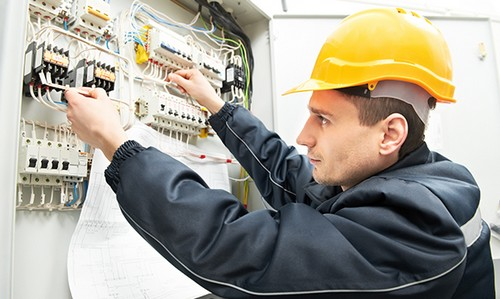

Urządzenia sygnalizacji pożarowej SATEL pozwalają zrealizować niezawodny i nowoczesny system odpowiadający
zabezpieczeństwo pożarowe.Połączenie 20-to letniego doświadczenia w branży elektronicznych systemów
zabezpieczeń z zaawansowanątechnologią produkcji zaowocowałozaprojektowaniem i wdrożeniem do
produkcjiszeregu urządzeń, które swoimimożliwościami przewyższają produkty dostępne dotychczas na
rynku.Pełnazgodność z wymaganiami norm serii EN54oraz Rozporządzenia MSWiA dotyczącego świadectwdopuszczenia
pozwala zastosować urządzenia SATEL wszędzietam,gdzie wymagają tego odpowiednieprzepisy.
Budujesz dom lub kupiłeś mieszkanie. Rynek pierwotny czy wtórny, nie ma znaczenia. Instalacje elektryczna
albo do zrobienia od zera, albo do wymiany bo z gniazdek zieje ogień, a w ogóle całość na dwóch obwodach.
Znajomy dał ci namiar na elektryka o imieniu Staszek. Podobno dobry jest i niewiele bierze.
Podczas realizacji przyglądasz się pracy elektryka i nasuwają ci się pytania, które – ku swojemu zdziwieniu
– wypowiadasz na głos: „Panie Staszku, a te przewody to dobre są, wystarczą takie? Panie Staszku, a te 10
obwodów to będzie dość na całe mieszkanie?” Pan Staszek bez względu na rodzaj pytania, z pewnością siebie w
głosie odpowiada: „Szefie całe życie zgodnie ze sztuką takie instalacje robię, może pan spać spokojnie”.
Pomimo tego, że nie dowiedziałeś się niczego, jesteś usatysfakcjonowany odpowiedzią, bo i tak w sumie nie
wiesz jak prawidłowa brzmieć powinna. Może warto to zmienić?